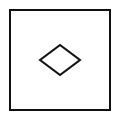
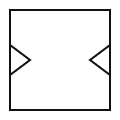
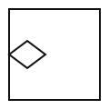
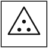
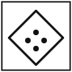

Mock 3 / Reasoning / Answers
Reasoning — Answers
Part II · Q71–100 · 30 marks
View questions without answers
Q.71Select the number that will come next in the series.
2, 12, 36, 80, 150, ?
- 1. 240
- 2. 252
- 3. 216
- 4. 294
Answer: 2 — The terms are n² × (n + 1): 1×2, 4×3, 9×4, 16×5, 25×6, so the next is 36 × 7 = 252.
Q.72Select the number that will come next in the series.
8, 15, 28, 53, ?
- 1. 102
- 2. 104
- 3. 106
- 4. 100
Answer: 1 — The pattern is ×2 − 1, ×2 − 2, ×2 − 3, so next ×2 − 4: 53 × 2 − 4 = 102.
Q.73Select the number that will come next in the series.
1, 2, 6, 24, 120, ?
- 1. 720
- 2. 600
- 3. 840
- 4. 620
Answer: 1 — The multipliers are ×2, ×3, ×4, ×5, so next ×6: 120 × 6 = 720. (These are factorials.)
Q.74Select the letter that will come next in the series.
Y, W, T, P, K, ?
- 1. F
- 2. D
- 3. G
- 4. E
Answer: 4 — Positions 25, 23, 20, 16, 11 decrease by 2, 3, 4, 5, so next by 6: 11 − 6 = 5 = E.
Q.75Select the term that will come next in the series.
AYB, CWD, EUF, ?
- 1. GSH
- 2. GTH
- 3. HSI
- 4. GRH
Answer: 1 — The first and third letters go forward by 2 (A, C, E, G and B, D, F, H). The middle letter goes back by 2 (Y, W, U, S).
Q.76In a certain code, MOTHER is written as NNUGFQ. How will FATHER be written in that code?
- 1. GZUGFQ
- 2. GBUGFQ
- 3. EZSGDQ
- 4. GZUIFQ
Answer: 1 — The letters move +1 and −1 alternately: F→G, A→Z, T→U, H→G, E→F, R→Q.
Q.77In a certain code, CUP is written as XFK. How will BOWL be written in that code?
- 1. YLCO
- 2. XLDO
- 3. YLDO
- 4. YMDO
Answer: 3 — Each letter is replaced by its mirror letter in the alphabet (A↔Z, B↔Y, …): B→Y, O→L, W→D, L→O.
Q.78If '+' means '×', '−' means '+', '×' means '÷' and '÷' means '−', what is the value of:
8 + 6 − 12 × 4 ÷ 3
- 1. 48
- 2. 51
- 3. 45
- 4. 54
Answer: 1 — Replacing the signs gives 8 × 6 + 12 ÷ 4 − 3 = 48 + 3 − 3 = 48.
Q.79Select the option that is related to the third term in the same way as the second term is related to the first term.
Chilika : Lagoon :: Sundarbans : ?
- 1. Desert
- 2. Mangrove forest
- 3. Plateau
- 4. Glacier
Answer: 2 — Chilika is a lagoon, and the Sundarbans is a mangrove forest in the Ganga–Brahmaputra delta.
Q.80Select the option that is related to the third term in the same way as the second term is related to the first term.
Numismatics : Coins :: Philately : ?
- 1. Postage stamps
- 2. Manuscripts
- 3. Inscriptions
- 4. Paintings
Answer: 1 — Numismatics is the study or collection of coins, and philately of postage stamps. Inscriptions are studied in epigraphy.
Q.81Select the option that is related to the third term in the same way as the second term is related to the first term.
DEF : WVU :: JKL : ?
- 1. QPO
- 2. PQR
- 3. OPQ
- 4. RQP
Answer: 1 — Each letter is replaced by its mirror letter: D↔W, E↔V, F↔U. So J↔Q, K↔P, L↔O.
Q.82Select the odd one out.
- 1. Dhauli
- 2. Konark
- 3. Ratnagiri
- 4. Lalitgiri
Answer: 2 — Dhauli, Ratnagiri and Lalitgiri are Buddhist sites in Odisha. Konark is famous for the Sun Temple.
Q.83Select the odd number from the given options.
- 1. 144
- 2. 27
- 3. 125
- 4. 216
Answer: 1 — 27, 125 and 216 are perfect cubes. 144 is a perfect square but not a cube.
Q.84Select the odd pair (dam – river).
- 1. Hirakud – Mahanadi
- 2. Sardar Sarovar – Krishna
- 3. Bhakra – Sutlej
- 4. Tehri – Bhagirathi
Answer: 2 — Sardar Sarovar is on the Narmada, not the Krishna. The other pairs are correct.
Q.85A person is facing north-east. The person turns 135° clockwise and then 90° anticlockwise. Which direction is he facing now?
- 1. South
- 2. East
- 3. North
- 4. West
Answer: 2 — North-east is 45°. Adding 135° gives 180° (south). Turning 90° anticlockwise gives 90°, i.e. east.
Q.86Sunil walks 6 km north, then 8 km east, and then 12 km south. How far is he from his starting point, and in which direction?
- 1. 10 km, South-East
- 2. 10 km, North-East
- 3. 14 km, South-East
- 4. 8 km, East
Answer: 1 — Net movement: 6 km south and 8 km east. √(6² + 8²) = 10 km, towards the south-east.
Q.87In a class, Raju is 9th from the top and 38th from the bottom. If 5 students failed, how many students passed?
- 1. 46
- 2. 41
- 3. 42
- 4. 40
Answer: 2 — Total = 9 + 38 − 1 = 46. Passed = 46 − 5 = 41.
Q.88Five houses in a row are painted Red, Blue, Green, Yellow and White. White is in the middle. Green is immediately to the right of Blue. Blue is not at either end. Red is at one end, and Yellow is next to Red. Which house is second from the left?
- 1. Blue
- 2. Red
- 3. Green
- 4. Yellow
Answer: 4 — Blue–Green can only take positions 4–5 (Blue cannot be at an end, and 3 is White). So Red is 1st and Yellow 2nd: Red, Yellow, White, Blue, Green.
Q.89Read the statements and decide which of the conclusions logically follow.
Statements: No car is a bus. Some buses are trucks.
Conclusions:
I. Some trucks are not cars.
II. No truck is a car.
- 1. Only conclusion I follows
- 2. Only conclusion II follows
- 3. Both I and II follow
- 4. Neither I nor II follows
Answer: 1 — The trucks that are buses cannot be cars, so I follows. Other trucks may be cars, so II does not follow.
Q.90Read the statements and decide which of the conclusions logically follow.
Statements: All kings are rich. Some rich people are generous.
Conclusions:
I. Some kings are generous.
II. Some generous people are rich.
- 1. Only conclusion I follows
- 2. Only conclusion II follows
- 3. Both I and II follow
- 4. Neither I nor II follows
Answer: 2 — II is the converse of 'some rich people are generous'. The generous rich people need not be kings, so I does not follow.
Q.91Statement: The museum will remain closed every Monday for maintenance work.
Conclusions:
I. The museum is open on Sundays.
II. Maintenance work is carried out in the museum regularly.
- 1. Only conclusion I follows
- 2. Only conclusion II follows
- 3. Both I and II follow
- 4. Neither I nor II follows
Answer: 2 — Closure every Monday for maintenance implies regular maintenance (II). Nothing is said about Sundays (I).
Q.92Statement: A large number of candidates who appeared in the TGT examination could not clear the reasoning section.
Conclusions:
I. The reasoning section was difficult for many candidates.
II. All the candidates were weak in English.
- 1. Only conclusion I follows
- 2. Only conclusion II follows
- 3. Both I and II follow
- 4. Neither I nor II follows
Answer: 1 — Many failing the reasoning section shows it was difficult for many (I). Nothing is said about English (II).
Q.93A clock shows 10:20. What time will its mirror image appear to show?
- 1. 2:40
- 2. 1:40
- 3. 1:20
- 4. 2:20
Answer: 2 — Mirror time = 11:60 − 10:20 = 1:40.
- 1. 36
- 2. 38
- 3. 42
- 4. 40
Answer: 4 — Third number = (first)² + second: 16 + 3 = 19, 25 + 2 = 27, 36 + 4 = 40.
Q.95How many triangles are there in the given figure?
- 1. 9
- 2. 10
- 3. 13
- 4. 16
Answer: 3 — Smallest: 6 upright + 3 inverted = 9. Medium (made of 4 small): 3. The whole triangle: 1. Total = 13.
Q.96How many squares are there in the given figure?
- 1. 11
- 2. 8
- 3. 10
- 4. 12
Answer: 1 — 8 small squares (1×1) + 3 squares of size 2×2 = 11.
Q.97Two different positions of the same dice are shown. Which number is on the face opposite the face showing 4?
- 1. 2
- 2. 6
- 3. 5
- 4. 3
Answer: 4 — With 6 on top in both, the side faces run 3 → 2 → 4 around the dice. In a ring of four side faces, alternate faces are opposite, so 4 is opposite 3.
Q.98A square sheet is folded along the dotted line (left half onto the right half), and a triangular notch is cut at the middle of the folded edge as shown. How will the sheet look when unfolded?
- 1.
- 2.

- 3.

- 4.

Answer: 2 — The cut on the fold is mirrored on both halves, so a triangle on the fold becomes a diamond-shaped hole at the centre of the sheet.
Q.99Select the figure that will come next in the given series.
- 1.
- 2.
- 3.
- 4.
Answer: 4 — The arrow turns 135° clockwise each time: up (0°) → down-right (135°) → left (270°) → up-right (405° = 45°).
Q.100Select the figure that is different from the others.
- 1.

- 2.

- 3.
- 4.
Answer: 4 — In the triangle, square and pentagon, the number of dots equals the number of sides. The hexagon has only 5 dots.